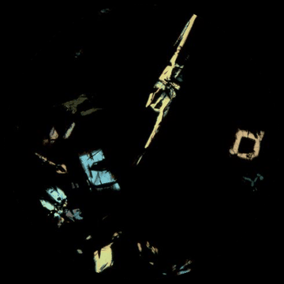

This webpage integrates a virtual gallery of lunar petrography, an experimental AI chatbot, and an AI literacy curriculum, aiming to draw upon diverse scientific data and years of work mentoring youth through hands-on experiences in ICP-MS water geochemistry labs, geological fieldwork, and experimental petrology to critically examine the opportunities and limitations of AI in advancing science, enriching museums and galleries, fostering youth intellectual growth, and enhancing public understanding of science.
Virtual Gallery

Olivine Chat
This is an experimental AI chatbot that will be upgraded over time.
AI Literacy Curriculum
Youth participating in this paid AI Literacy curriculum will critically examine the role and limitations of AI. The AI literacy curriculum is informed by our previous public webinars, years of hands-on scientific experiences, and the work presented below:
- O. Tschauner, S. Huang, J. Hardin, M. Petaev, L. Magad-Weiss, E. Tschauner, M. White, A. Salamat, N. Dygert, and P. Wang, "Synthesis of K- and Fe-rich davemaoite", American Mineralogist, 2026. doi: https://doi.org/10.2138/am-2026-10284
- P. Wang, D. Pelaia, Z. Zou, S. Xiao, A. He, N. He, F. Zhu, N. Mao, J. Wu, J. Wu, C. Neal, and S. Huang," OCR-Enabled Dataset Assembly for Machine Learning in Olivine Geochemistry," ESS Open Archive, December 24, 2025. DOI: 10.22541/essoar.176659907.72242256/v1
- P. Wang and S. Huang, "NSF AISL: Responsible AI in Planetary Scientific Practice," ASEE, 2026
- P. Wang, D. Pelaia, Z. Zou, S. Xiao, A. He, N. He, F. Zhu, N. Mao, J. Wu, J. Wu, C. Neal, and S. Huang, "AI-powered Data Extraction, Integration, and Analysis on the Geochemistry of Returned Lunar Samples,” AGU, 2025.
- D. Pelaia, N. He, and P. Wang, “FLASH: An AI Chatbot for Real-Time Flash Flood Risk Detection and Information Dissemination,” ESS Open Archive, 2025.
- M. Powell, G. Xu, S. Huang, B. Duggan, B. Alexander, P. Wang, V. Mclemore, Virginia, E. Owen, and S. Wei, "Critical Mineral Resource in Heavy Mineral Beach-Placer Sandstone Deposits in New Mexico," GSA, 2025. 10.1130/abs/2025AM-11007.
- Z. Zou, D. Pelaia, N. He, S. Jones, P. Wang, S. Huang, and B. Duggan, "Exploring Trace Element Fingerprinting in Water Samples with Artificial Intelligence," AGU, 2024
- P. Wang, et al., “Experimenting with Emerging Artificial Intelligence and Augmented Reality Technologies Utilizing Planetary Science Data for STEM Education and Public Outreach,” LPI Contributions, vol. 3040, no. 1338, 2024.
- P. Wang and S. Huang, “BOARD #396: NSF AISL: Incorporating Linear Algebra in an AI Literacy Curriculum in Informal and Formal Learning Settings,” in Proc. ASEE Annu. Conf. Expo., 2024. doi: 10.18260/1-2--55770.
- P. Wang, "Engaging Communities in Geo-STEM with Technology," 72nd Annual Meeting of the Rocky Mountain Section, GSA, 2022.
We wanted to thank Dr. Stein Jacobsen (Harvard Univ), Dr. Hairuo Fu (Brown Univ), Dr. Nick Dygert (UTK), Dr. Justin Simon (Johnson Space Center), Dr. Jian Wu (ODU), Dr. Shane Byrne (U.Arizona), Dr. Clive Neal (Notre Dame), Jinqi Wu (PhD student at Harvard), Troy Harris (now studying at Stanford), Anya Zhang (studying at Stanford), Alice Zou (now studying at Catech), Dominick Pelaia (L&M Academy), Nathan Mao (Harker School), and Nathan He (who will be studying at Princeton).
AI-assisted Exhibits
We invite museums and galleries to collaborate on developing and deploying kiosk chatbots and interactive exhibits as platforms for planetary science research, planetary explorations, and public engagement.
Acknowledgement
This work is developed by PI Ping Wang who is a Research Scientist at the Planetary Science Institute. This work is supported by the National Science Foundation under Grant No. DRL-2620566. Any opinions, findings, and conclusions or recommendations expressed are those of the authors and do not necessarily reflect the views of the National Science Foundation.
Contact
pwang@psi.edu